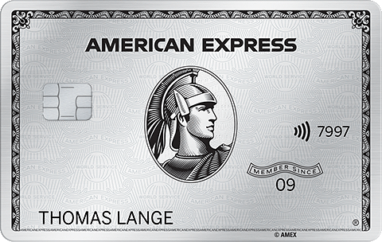
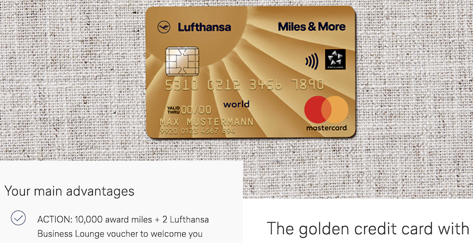

Escolhendo seu melhor aliado
para multiplicar suas milhas e benefícios.

Cartões de Crédito
Cartões de crédito são ótimas ferramentas para te ajudar acumular mais milhas e até multiplicar seus benefícios quando viajando. Seja reservando hotéis, alugando carros ou consumindo nas viagens.
Uma diferença que muitos brasileiros encontram em outros países, é a baixa aceitação e uso de cartões de crédito, mas tem algumas dicas importantes aqui pra você não perder seus pontos do cartão mesmo em lugares onde o uso é mais restrito.
Para quem são os cartões de crédito?
O primeiro conceito que precisamos estabelecer aqui, é que existem cartões de crédito para todos os bolsos, e todos eles vão te ajudar muito, às vezes em áreas diferentes, mas é sempre possível utilizar ao máximo os seus benefícios.
E não, não é preciso ser rico e ter uma renda gigantesca para conseguir um cartão que acumule pontos.
O seu foco como viajante, é utilizar um cartão de crédito que te traga benefícios para viajar mais e
melhor, por isso focar nas coisas certas fazem muita diferença. Acumular milhas te ajudará muito mais
do que acesso à Sala VIP pra tirar foto e ganhar likes no Instagram.
SEMPRE pague sua fatura 100%, os juros do cartão de crédito são exorbitantes e podem comprometer sua saúde financeira.
Quais são os tipos mais comuns?

- Cartões emitidos por cias aéreas.
- Cartões emitidos por bancos, com possibilidade de pontuar em programas aéreos.
- Cartões de grupos hoteleiros que geram pontos e tem transferência para milhas aéreas.
- Cartões emitidos por bancos ou grande lojas, com programa próprio de pontos, mas que tem parceria de transferência para milhas aéreas.
Obviamente essas opções dependem muito do seu mercado local, das cias aéreas do seu país e com quais lojas e bancos elas tem parceria.
Os exemplos aqui são quase todos focados na Europa no geral, mas o conceito é o mesmo para qualquer país.
Seguros
Um item muitíssimo importante relacionado aos cartões de crédito, é a cobertura de seguros que ele
oferece.
Como viajante, a última coisa que você quer, é estar do outro lado do mundo e ter dor de cabeça com
problemas relacionados a sua viagem.
Os principais seguros que você deve verificar num cartões de crédito:
- Seguro internacional de saúde: em caso de ficar doente, ou se machucar e precisar de atendimento médico e/ou internação.
- Seguro para cancelamento de voo: se você tem um voo cancelado e precisar se hospedar por mais tempo ou mesmo comprar passagem de outra cia aérea. Verifique o valor total disponibilizado pelo cartão.
- Seguro para extravio de bagagem: chegou à Tailândia, mas suas malas foram pro Canadá? Ou a cia aérea nem sabe onde suas malas estão, é, você vai precisar ir às compras e o ideal é não gastar nada do seu bolso com isso.
- Seguro para atraso de voo: cobre despesas diversas que você tenha por ter que esperar várias horas pelo seu voo, e isso pode chegar a dezenas de horas. Verifique o mínimo necessário de horas de atraso do seu cartão para utilizar esse seguro.
- Seguro de cancelamento de viagem por motivo de saúde: principalmente para famílias com crianças, ter que cancelar uma viajem da noite pro dia é algo real. Alguns cartões cobrem cancelamento total sem nem precisar ser por motivo de saúde, mas é importante ler todos os regulamentos e regras do seu cartão.
Obviamente existem outros seguros diversos oferecidos pelos cartões de crédito, mas como viajante esses seguros listados aqui devem ser os mais essenciais para você e sua família.
Importante:Sempre leia todos os regulamentos e regras do seu cartão em relação aos seguros, as letrinhas miúdas são de extrema importância para saber o que fazer e quais coberturas você tem direito.
Como Acumular Milhas
Parece uma tarefa simples, mas aqui vão algumas dicas adicionais para maximizar o uso do seu cartão e acumular ainda mais milhas no seu dia-a-dia:
- Tente acumular o máximo possível dos seus gastos no seu cartão.
- Cadastre todas as contas online para utilizar seu cartão, ou uso algo como PayPal para centralizar todos os gastos online e adicione seu cartão como meio principal de pagamento dentro do PayPal ou qualquer outra plataforma.
- O PayPal é uma das poucas plataformas de pagamento que aceita cartão American Express.
- Se você tem um cartão Amex onde a aceitação é baixa, tenha um segundo cartão, Visa ou Mastercard, que também gere milhas/pontos.
- Tente pesquisar o histórico de promoções para Bônus de Boas-Vindas (Welcome Bonus) do seu cartão, em alguns casos vale a penas esperar até uns meses por uma nova promoção.
- Indique amigos e familiares que também possam se beneficiar do mesmo cartão que o seu, para se cadastrarem usando seu link de referência, assim você ganha os pontos de indicação.
- Pague suas contas do dia a dia usando o cartão de crédito. (aluguel, energia, impostos, etc)
Diferentes Tipos de Bônus

Bônus de Boas-Vindas
Conhecido pelo termo em inglês, Welcome Bonus, essa é uma oferta bem importante oferecida pelos
emissores dos cartões de crédito, como um diferencial para que você escolha um cartão ao invés de
outro da concorrência.
Esses bônus podem ser grandes quantidades de milhas, valores para serem consumidos usando o cartão
e "não precisar pagar", acesso à salas VIP e etc.
Um dos pontos mais interessantes é a oferta de bônus de milhas, que geralmente são algumas dezenas
de milheiros (40 mil milhas por exemplo), mas que eventualmente, uma ou duas vezes por ano,
as empresas oferecem promoções maiores com total de milhas que "paga" tranquilamente para
fazer uma viagem longa ida e volta.
Precisa ficar de olho no site do cartão que você tem interesse e pesquisar promoções anteriores
para saber quais valores costumam ser oferecidos. E esse tipo de oferta depende de muitas condições
de mercado e outras variáveis, então não conte com isso como algo 100% garantido de acontecer.
Muitas vezes esse bônus de boas-vindas só é creditado se você obedecer algumas regras, como 6 meses sem cancelar o cartão e não atrasar pagamento, não ter assinado outro cartão da mesma empresa por 18 meses, etc. Verifique com cuidado as regras de cada cartão de crédito.
O bônus pode ser "tomado de volta" também se a empresa encontrar qualquer movimentação suspeita apenas para receber o bônus.
Bônus de Referência
Esse bônus, também conhecido como bônus de indicação, acontece quando você compartilha com outras
pessoas um link único pessoal, da sua conta, para que elas possam requisitar um
cartão usando o SEU LINK ou um CÓDIGO seu na hora do cadastro.
Dessa forma, a empresa sabe que você indicou um novo cliente e te recompensa com algum bônus.
No geral os bônus de referência são alguns milhares de milhas, mas na maioria dos casos, quantidades pequenas. Por exemplo, os números geralmente variam entre 1.000 e 5.000 milhas ou pontos, podendo chegar algumas vezes a mais de 10.000 em alguns cartões com maiores exigências de adesão ou promoções específicas.
Alguns cartões não tem limite de quantas pessoas você pode indicar, mas sempre analisam suas
indicações para ver se não há nenhum tipo de fraude somente para ganhar os bônus.
Outros cartões podem limitar esse número, sempre verifique as regras do seu cartão de crédito
para saber como proceder e até como reivindicar pontos não recebidos por uma indicação.
Alguns programas de redes hoteleiras e também de cias aéreas também oferecem Bônus de Referência, sempre consulte todos os programas que você tem conta.
Nota: alguns dos links utilizados nessa página, contém link de referência.Importante:
TODOS os itens listados aqui conformam com os "termos de uso" de cada plataforma. Esses termos e regras VARIAM entre países, por isso, sempre consulte as suas regras locais.
As funcionalidades descritas aqui podem deixar de funcionar sem aviso prévio, tenha sempre isso em mente quando montar sua estratégia de uso.
Cartões de Crédito pelo Mundo 🌎
Nessa seção você vai encontrar uma lista de cartões de crédito que podem ser interessantes para você,
dependendo do seu perfil de viagem.
Cada link contém informações sobre cartões de um país específico.
Se você quiser contribuir com informações sobre cartões de crédito de outros países, por favor entre em contato nos links do rodapé da página, ou se você for familiar com o GitHub, fique à vontade para criar um Pull Request ou Issue com os dados para serem adicionados aqui.
- 🇩🇪 Alemanha
- 🇦🇺 Austrália - Direcionando para um site externo [link], com ótimo conteúdo sobre cartões de crédito, acúmulo de milhas e promoções na Austrália.